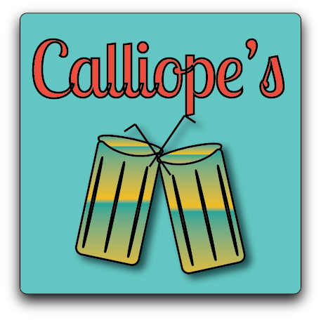

Calliope's

Project details
For my Graphic Design II class, I was tasked with developing a comprehensive brand identity for a fictional 1950s-inspired diner with a unique twist. The concept, titled "Calliope's," blends vibrant Caribbean aesthetics with a classic diner theme, catering to a vegetarian audience.
Design Goals & Vision
My vision for Calliope's was to create a visually dynamic and inviting brand experience. The design leverages bold Caribbean colors, including vibrant gradients, to evoke a sense of energy and fun, reminiscent of the era. This approach pays homage to the classic diner aesthetic, while incorporating a modern, fresh twist inspired by the restaurant's Mediterranean-vegetarian menu. The logo for Calliope's features a dynamic gradient depicting two glasses clinking in a celebratory toast. The color palette utilizes a vibrant blue and a rich Caribbean red, seamlessly tying into the overall brand identity.